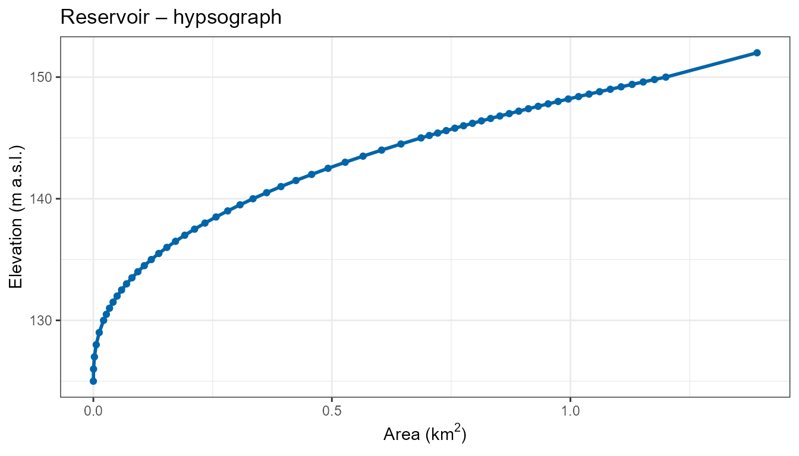
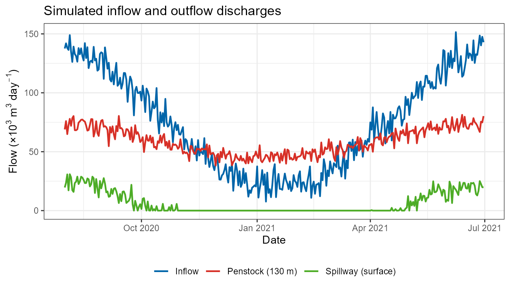
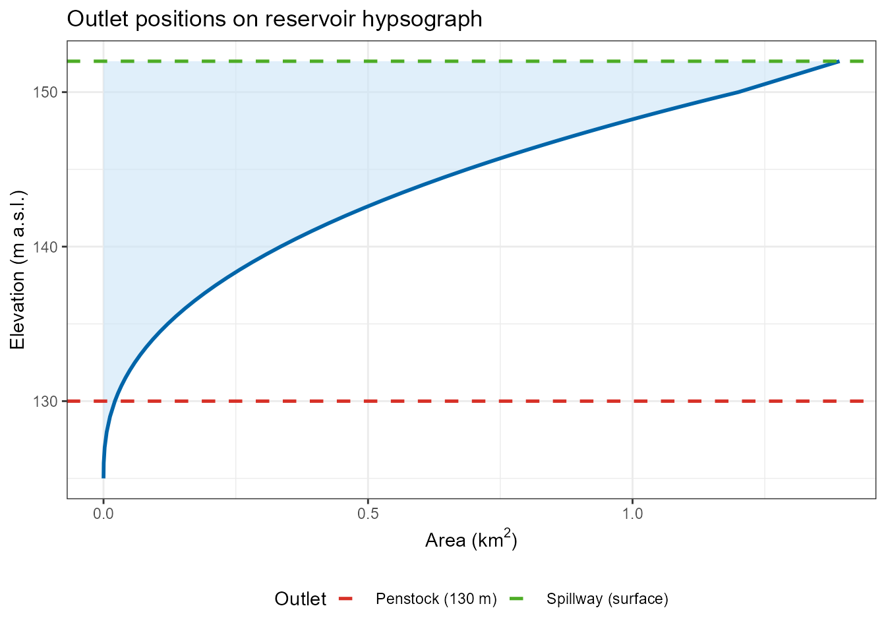
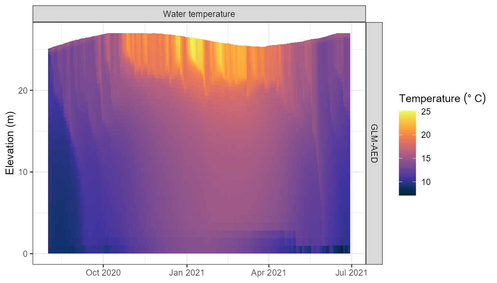

Reservoir Simulation with Multiple Outlets
Source:vignettes/articles/reservoir-aeme.Rmd
reservoir-aeme.RmdIntroduction
Reservoirs differ from natural lakes in several ways that are important for hydrodynamic modelling:
- Regulated water levels – reservoir levels are managed through controlled releases rather than a natural outlet or seepage.
-
Multiple outlets at different depths – a single
reservoir can have:
- A surface spillway that only activates when the reservoir is near full capacity.
- A penstock or bottom outlet for daily operational releases.
- A mid-level selective withdrawal outlet for water quality management (e.g. to avoid releasing cold, anoxic hypolimnetic water).
- Thermal stratification management – withdrawals from different depth layers affect the downstream temperature and water quality.
AEME supports all three major 1-D hydrodynamic models (DYRESM-CAEDYM, GLM-AED, GOTM-WET) with multiple outlets at arbitrary elevations. This vignette walks through setting up a reservoir ensemble model with two outlets at different levels: a regulated penstock at depth and a surface spillway.
Reservoir data
We will use a fictional reservoir, Reservoir, located in the North Island of New Zealand. The reservoir has a full supply level of 150 m above sea level and a maximum depth of 25 m.
lat <- -37.80
lon <- 176.00
elev <- 150 # full supply level (m a.s.l.)
depth <- 25 # maximum depth (m)
area <- 1.2e6 # surface area at full supply level (m²)
reservoir <- list(
name = "Reservoir",
id = "res001",
latitude = lat,
longitude = lon,
elevation = elev,
depth = depth,
area = area
)Simulation period
time <- list(
start = "2020-08-01 00:00:00",
stop = "2021-06-30 00:00:00"
)Meteorological data
Meteorological data bundled with the AEME package (originally from Lake Wainamu, North Island) is reused here to drive the reservoir simulation.
meteo_file <- system.file("extdata/lake/data/meteo.csv", package = "AEME")
met <- read.csv(meteo_file) |>
mutate(Date = as.Date(Date))
head(met[, 1:5])
#> Date MET_tmpair MET_tmpdew MET_wnduvu MET_wnduvv
#> 1 2019-01-01 19.5260 16.9129 3.19505 4.21590
#> 2 2019-01-02 19.5024 15.7136 4.59457 2.62703
#> 3 2019-01-03 20.1359 18.0478 6.17768 3.99858
#> 4 2019-01-04 19.1298 15.2155 2.56012 5.66473
#> 5 2019-01-05 19.1868 15.3679 3.77683 2.75966
#> 6 2019-01-06 20.2102 16.6466 4.83125 3.06035Hypsograph
The hypsograph describes the relationship between elevation and
surface area (and thus volume). Constructed reservoirs typically have a
more prismatic (box-like) shape compared to natural lakes. This is
reflected by a higher volume_development parameter (values
> 1.5 give a convex, cylindrical shape; a value of 3 corresponds to a
perfect cylinder).
hypsograph <- generate_hypsograph(
max_depth = depth,
surface_area = area,
volume_development = 2.5, # more prismatic than a natural lake
elev = elev,
ext_elev = 2 # extend 2 m above full supply level
)
head(hypsograph)
#> elev depth area
#> 1 152.0 2.0 1391324
#> 2 150.0 0.0 1200000
#> 3 149.8 -0.2 1176144
#> 4 149.6 -0.4 1152574
#> 5 149.4 -0.6 1129291
#> 6 149.2 -0.8 1106292
ggplot(hypsograph, aes(x = area / 1e6, y = elev)) +
geom_line(linewidth = 1, colour = "#0065a9") +
geom_point(size = 1.5, colour = "#0065a9") +
labs(
x = expression("Area (km"^2 * ")"),
y = "Elevation (m a.s.l.)",
title = "Reservoir – hypsograph"
) +
theme_bw()
Inflow data
We create a synthetic seasonal inflow time series typical of a New
Zealand catchment, with higher flows in winter (June–August) and lower
flows in summer. The inflow data frame must contain at minimum
Date and HYD_flow (m³ day⁻¹). Temperature
(HYD_temp, °C) and salinity (CHM_salt, PSU)
columns are recommended.
set.seed(42)
sim_dates <- seq(as.Date("2020-01-01"), as.Date("2021-12-31"), by = "day")
doy <- as.integer(format(sim_dates, "%j"))
# Seasonal signal: peak winter flow ~day 200 (NZ Southern Hemisphere winter)
inflow_flow <- pmax(5000,
80000 + 60000 * cos(2 * pi * (doy - 200) / 365) +
rnorm(length(sim_dates), mean = 0, sd = 8000))
# River temperature: coolest in winter, warmest in summer
inflow_temp <- pmax(4, 15 - 8 * cos(2 * pi * (doy - 15) / 365))
inflow_data <- data.frame(
Date = sim_dates,
HYD_flow = inflow_flow,
HYD_temp = inflow_temp,
CHM_salt = 0
)
head(inflow_data[, 1:3])
#> Date HYD_flow HYD_temp
#> 1 2020-01-01 33371.71 7.231200
#> 2 2020-01-02 17605.56 7.199484
#> 3 2020-01-03 24764.44 7.170079
#> 4 2020-01-04 26675.80 7.142995
#> 5 2020-01-05 24617.84 7.118239
#> 6 2020-01-06 20322.85 7.095819Multiple outlet data
The key feature demonstrated in this vignette is the configuration of two outlets at different elevations:
| Outlet | Elevation | Description |
|---|---|---|
| Penstock | 130 m | Regulated bottom release; 20 m below full supply level |
| Spillway | -1 (surface) | Uncontrolled overflow at the water surface |
# Penstock: regulated base flow with small seasonal variation
penstock_flow <- pmax(0,
60000 + 15000 * sin(2 * pi * (doy - 100) / 365) +
rnorm(length(sim_dates), mean = 0, sd = 4000))
# Spillway: only active during the high-inflow winter period
spillway_flow <- pmax(0,
25000 * cos(2 * pi * (doy - 200) / 365) +
rnorm(length(sim_dates), mean = 0, sd = 5000))
penstock_data <- data.frame(
Date = sim_dates,
HYD_flow = penstock_flow
)
spillway_data <- data.frame(
Date = sim_dates,
HYD_flow = spillway_flow
)Visualise the inflow and both outflows over the simulation period:
flows <- bind_rows(
mutate(inflow_data[, c("Date", "HYD_flow")], stream = "Inflow"),
mutate(penstock_data, stream = "Penstock (130 m)"),
mutate(spillway_data, stream = "Spillway (surface)")
) |>
filter(Date >= as.Date("2020-08-01"),
Date <= as.Date("2021-06-30"))
ggplot(flows, aes(x = Date, y = HYD_flow / 1e3, colour = stream)) +
geom_line(linewidth = 0.8) +
scale_colour_manual(
values = c("Inflow" = "#0065a9",
"Penstock (130 m)" = "#d73027",
"Spillway (surface)" = "#4dac26"),
name = NULL
) +
labs(
x = "Date",
y = expression("Flow (×10"^3 * " m"^3 * " day"^{-1} * ")"),
title = "Simulated inflow and outflow discharges"
) +
theme_bw() +
theme(legend.position = "bottom")
The penstock provides a near-constant regulated release throughout the year, while the spillway flows only during the high-flow winter months.
Outlet positions on the hypsograph
It is important that each subsurface outlet elevation falls within the elevation range of the hypsograph. Below we illustrate where the two outlets sit relative to the reservoir hypsograph.
outlet_lines <- data.frame(
elev = c(130, max(hypsograph$elev)),
label = c("Penstock (130 m)", "Spillway (surface)")
)
ggplot(hypsograph, aes(x = area / 1e6, y = elev)) +
geom_ribbon(aes(xmin = 0, xmax = area / 1e6), fill = "#cce5f7", alpha = 0.6) +
geom_line(linewidth = 1, colour = "#0065a9") +
geom_hline(data = outlet_lines,
aes(yintercept = elev, colour = label),
linetype = "dashed", linewidth = 0.9) +
scale_colour_manual(
values = c("Penstock (130 m)" = "#d73027",
"Spillway (surface)" = "#4dac26"),
name = "Outlet"
) +
labs(
x = expression("Area (km"^2 * ")"),
y = "Elevation (m a.s.l.)",
title = "Outlet positions on reservoir hypsograph"
) +
theme_bw() +
theme(legend.position = "bottom")
Build the AEME object
We assemble the AEME object with aeme_constructor(). The
input list must include at minimum the hypsograph,
meteorological data, and light extinction coefficient
(Kw).
input <- list(
init_depth = depth,
hypsograph = hypsograph,
meteo = met,
use_lw = TRUE,
Kw = 0.5 # light extinction coefficient (m⁻¹)
)
aeme <- aeme_constructor(
lake = reservoir,
time = time,
input = input
)
#> ! `time$time_step` is missing.
#> ℹ Defaulting to 3600 seconds (1 hour).
#> ! `time$spin_up` is missing.
#> ℹ Defaulting to 2 days spin-up for all models.
aeme
#> Warning: ! This <Aeme> object has no recorded AEME package version.
#> ℹ It was likely built with an older version of AEME (<0.4.0), or has never been
#> built with `build_aeme()`. Consider rebuilding with `build_aeme()` to keep it
#> in sync with the installed package (0.4.0).
#> This warning is displayed once per session.
#>
#> ── AEME not yet built ──────────────────────────────────────────────────────────
#>
#> ── Lake ──
#>
#> Reservoir (ID: res001)
#> • Lat: -37.8; Lon: 176
#> • Elev: 150m; Depth: 25m; Area: 1200000 m2
#>
#> ── Time ──
#>
#> • Start: 2020-08-01 00:00:00; Stop: 2021-06-30 00:00:00; Time step: 3600 s;
#> Output step: 86400 s
#> • Timezone: UTC (timestamps stored UTC)
#> • Spin up (days): GLM: 2; GOTM: 2; DYRESM: 2; Simstrat: 2
#>
#> ── Configuration ──
#>
#> • Model: glm_aed
#> • Path: D:/a/AEME/AEME/vignettes/articles
#> • Model controls: Present
#> • Use biogeochemical model: No
#> ┌ Model Configuration ─────────────────────────────────────────┐
#> │ Model Physical Biogeochemical │
#> │ --- │
#> │ DY-CD Absent Absent │
#> │ GLM-AED Absent Absent │
#> │ GOTM-WET Absent Absent │
#> │ SIMSTRAT-AED2 Absent Absent │
#> │ SIMSTRAT-AED Absent Absent │
#> └──────────────────────────────────────────────────────────────┘
#>
#> ── Observations ──
#>
#> • Lake: Absent; Level: Absent
#>
#> ── Input ──
#>
#> • Initial profile: Absent; Initial depth: 25m
#> • Hypsograph: Present (n=62)
#> • Meteo: Present; Use longwave: TRUE; Kw: 0.5
#>
#> ── Inflows ──
#>
#> • Number of inflows: 0; Names: None
#> • Scaling factors: DY-CD: 1; GLM-AED: 1; GOTM-WET: 1; Simstrat-AED2: 1
#>
#> ── Outflows ──
#>
#> • Number of outflows: 0; Names: None; Elevations: N/A
#> • Scaling factors: DY-CD: 1; GLM-AED: 1; GOTM-WET: 1; Simstrat-AED2: 1
#>
#> ── Water Balance ──
#>
#> • Method: 2; Use: obs
#> • Modelled: Absent; Water balance: Absent
#>
#> ── Parameters ──
#>
#> • Number of parameters: 0
#>
#> ── Output ──
#>
#> • DY-CD: 0
#> • GLM-AED: 0
#> • GOTM-WET: 0
#> • SIMSTRAT-AED2: 0
#> • SIMSTRAT-AED: 0
#> • Variables: 0
#> NoneAdd inflows
Inflows are added as a named list of data frames. The name (here
"river") is used as the stream identifier in each
model.
aeme <- add_inflows(aeme, data = list(river = inflow_data))Add multiple outflows
The add_outflows() function accepts:
-
data– a named list of outflow data frames (each with at leastDateandHYD_flowcolumns). -
elevation– a named list matching the names indata.
Useelevation = -1for a surface outlet; supply the elevation in metres above sea level (within the hypsograph range) for a subsurface outlet.
aeme <- add_outflows(
aeme,
data = list(
penstock = penstock_data,
spillway = spillway_data
),
elevation = list(
penstock = 130, # 20 m below the full supply level
spillway = -1 # surface outlet (overflow)
)
)
# Inspect the outflows slot
outf <- outflows(aeme)
cat("Outflow names :", paste(names(outf$data), collapse = ", "), "\n")
#> Outflow names : penstock, spillway
cat("Elevations :",
paste(names(outf$elevation),
unlist(outf$elevation), sep = " = ", collapse = "; "), "\n")
#> Elevations : penstock = 130; spillway = -1Printing the aeme object now shows both outlets
registered in the outflows slot:
aeme
#>
#> ── AEME not yet built ──────────────────────────────────────────────────────────
#>
#> ── Lake ──
#>
#> Reservoir (ID: res001)
#> • Lat: -37.8; Lon: 176
#> • Elev: 150m; Depth: 25m; Area: 1200000 m2
#>
#> ── Time ──
#>
#> • Start: 2020-08-01 00:00:00; Stop: 2021-06-30 00:00:00; Time step: 3600 s;
#> Output step: 86400 s
#> • Timezone: UTC (timestamps stored UTC)
#> • Spin up (days): GLM: 2; GOTM: 2; DYRESM: 2; Simstrat: 2
#>
#> ── Configuration ──
#>
#> • Model: glm_aed
#> • Path: D:/a/AEME/AEME/vignettes/articles
#> • Model controls: Present
#> • Use biogeochemical model: No
#> ┌ Model Configuration ─────────────────────────────────────────┐
#> │ Model Physical Biogeochemical │
#> │ --- │
#> │ DY-CD Absent Absent │
#> │ GLM-AED Absent Absent │
#> │ GOTM-WET Absent Absent │
#> │ SIMSTRAT-AED2 Absent Absent │
#> │ SIMSTRAT-AED Absent Absent │
#> └──────────────────────────────────────────────────────────────┘
#>
#> ── Observations ──
#>
#> • Lake: Absent; Level: Absent
#>
#> ── Input ──
#>
#> • Initial profile: Absent; Initial depth: 25m
#> • Hypsograph: Present (n=62)
#> • Meteo: Present; Use longwave: TRUE; Kw: 0.5
#>
#> ── Inflows ──
#>
#> • Number of inflows: 1; Names: river
#> • Scaling factors: DY-CD: 1; GLM-AED: 1; GOTM-WET: 1; Simstrat-AED2: 1
#>
#> ── Outflows ──
#>
#> • Number of outflows: 2; Names: penstock, spillway; Elevations: 130, -1
#> • Scaling factors: DY-CD: 1; GLM-AED: 1; GOTM-WET: 1; Simstrat-AED2: 1
#>
#> ── Water Balance ──
#>
#> • Method: 2; Use: obs
#> • Modelled: Absent; Water balance: Absent
#>
#> ── Parameters ──
#>
#> • Number of parameters: 0
#>
#> ── Output ──
#>
#> • DY-CD: 0
#> • GLM-AED: 0
#> • GOTM-WET: 0
#> • SIMSTRAT-AED2: 0
#> • SIMSTRAT-AED: 0
#> • Variables: 0
#> NoneBuild model configurations
build_aeme() translates the AEME object into the
configuration files required by each model. Each model handles multiple
outlets in its own way:
-
GLM-AED: creates individual CSV boundary condition
files (
bcs/outflow_<name>.csv) and setsnum_outlet,outl_elvs, andoutlet_typein the GLM hydrodynamic nml (glm3.nmlorglm4.nml). For finer control thanadd_outflows()/build_aeme()offer – adaptive or target-temperature outlets, submerged draws, weir geometry – edit the&outflowblock directly withset_glm_outflow_config()after building. -
GOTM-WET: creates individual data files
(
inputs/outf_<name>.dat) and updatesgotm.yaml. -
DYRESM-CAEDYM: writes all outlets into a single
.wdrfile with a column per outlet and the number of outlets in the header.
model_controls <- get_model_controls()
model <- c("glm_aed")
path <- file.path(tempdir(), "reservoir")
aeme <- build_aeme(
aeme = aeme,
model = model,
model_controls = model_controls,
path = path,
ext_elev = 2,
use_bgc = FALSE,
wb_method = 1
)
#> ✔ Created missing directory:
#> C:\Users\RUNNER~1\AppData\Local\Temp\RtmpoVL7us\reservoir
#>
#>
#> ── Calculating water balance ──
#>
#>
#>
#> Resolving water level
#>
#> ℹ No water level present. Using constant water level.
#> ℹ Estimating surface water temperature
#>
#> ℹ Insufficient lake temperature observations (<10).
#> ℹ Using Stefan & Preud'homme (2007) method to estimate surface temperature.
#> ✔ Estimating surface water temperature [41ms]
#>
#>
#>
#> ℹ No water balance correction applied (method = 1).
#> Warning in get_obs(aeme, var_sim = "HYD_temp"): No observations found for the
#> selected variable.
#>
#> ── Building GLM-AED for lake reservoir ──
#>
#> ℹ Copied in GLM nml file (glm4.nml)ℹ Copied in AED nml file and supporting filesℹ Copied in GLM plots nml file! Forcing sed_heat_model from 2 to 1: sed_heat_model = 2 needs an active WQ
#> module and `use_bgc` is FALSE.
#> Warning: GLM ignores the AirPres met column in daily mode and uses the default 1013.25 hPa instead.
#> This warning is displayed once per session.
#> ✔ GLM nml validation completed - no issues detected.Run the models
aeme <- run_aeme(aeme = aeme, model = model, path = path)
#> ℹ Running models... (Have you tried parallelizing?) [2026-10-09 04:06:24]
#> ℹ GLM-AED running... [2026-10-09 04:06:24]
#>
#> Reading configuration from C:\Users\runneradmin\AppData\Local\Temp\RtmpoVL7us\reservoir/res001_reservoir/glm_aed/glm4.nml
#> No 'particles' config, assuming no particles
#> NOTE: value for base_elev is no longer used; H[1] is assumed.
#> VolAtCrest= 11165328.49350; MaxVol= 11165328.49350 (m3)
#> No 'snowice' section, setting defaults & assuming no snowfall
#> 'sediment' section present, simulating sediment heating
#> WARNING last zone height is less than maximum depth
#> ... adding an extra zone to compensate
#> DBG calling initialise_lake
#> DBG entered initialise_lake
#> DBG init_profiles: num_heights=0 num_depths=2 the_heights=0000000000000000 the_depths=000001C26E2CC440 lake_depth=25.000000
#> WARNING: Initial profiles problem - expected 0 wd_init_vals entries but got 1
#> DBG initialise_lake returned
#>
#> -------------------------------------------------------
#> | General Lake Model (GLM) Version 4.0.0 |
#> -------------------------------------------------------
#>
#> glm built using gcc version 16.1.0
#>
#> nDays= 200; timestep= 3600.000000 (s)
#> Maximum lake depth is 27.000000
#> Depth where flow will occur over the crest is 27.000000
#> *sed_temp_mean[0] = 10.00000
#> Heat pump disabled (heat_pump_switch = 0)
#> Oxygenation disabled
#>
#> Wall clock start time : Fri Oct 9 04:06:25 2026
#>
#> Simulation begins...
#> Running day 2459061, 0.30% of days complete Running day 2459062, 0.60% of days complete Running day 2459063, 0.89% of days complete Running day 2459064, 1.19% of days complete Running day 2459065, 1.49% of days complete Running day 2459066, 1.79% of days complete Running day 2459067, 2.08% of days complete Running day 2459068, 2.38% of days complete Running day 2459069, 2.68% of days complete Running day 2459070, 2.98% of days complete Running day 2459071, 3.27% of days complete Running day 2459072, 3.57% of days complete Running day 2459073, 3.87% of days complete Running day 2459074, 4.17% of days complete Running day 2459075, 4.46% of days complete Running day 2459076, 4.76% of days complete Running day 2459077, 5.06% of days complete Running day 2459078, 5.36% of days complete Running day 2459079, 5.65% of days complete Running day 2459080, 5.95% of days complete Running day 2459081, 6.25% of days complete Running day 2459082, 6.55% of days complete Running day 2459083, 6.85% of days complete Running day 2459084, 7.14% of days complete Running day 2459085, 7.44% of days complete Running day 2459086, 7.74% of days complete Running day 2459087, 8.04% of days complete Running day 2459088, 8.33% of days complete Running day 2459089, 8.63% of days complete Running day 2459090, 8.93% of days complete Running day 2459091, 9.23% of days complete Running day 2459092, 9.52% of days complete Running day 2459093, 9.82% of days complete Running day 2459094, 10.12% of days complete Running day 2459095, 10.42% of days complete Running day 2459096, 10.71% of days complete Running day 2459097, 11.01% of days complete Running day 2459098, 11.31% of days complete Running day 2459099, 11.61% of days complete Running day 2459100, 11.90% of days complete Running day 2459101, 12.20% of days complete Running day 2459102, 12.50% of days complete Running day 2459103, 12.80% of days complete Running day 2459104, 13.10% of days complete Running day 2459105, 13.39% of days complete Running day 2459106, 13.69% of days complete Running day 2459107, 13.99% of days complete Running day 2459108, 14.29% of days complete Running day 2459109, 14.58% of days complete Running day 2459110, 14.88% of days complete Running day 2459111, 15.18% of days complete Running day 2459112, 15.48% of days complete Running day 2459113, 15.77% of days complete Running day 2459114, 16.07% of days complete Running day 2459115, 16.37% of days complete Running day 2459116, 16.67% of days complete Running day 2459117, 16.96% of days complete Running day 2459118, 17.26% of days complete Running day 2459119, 17.56% of days complete Running day 2459120, 17.86% of days complete Running day 2459121, 18.15% of days complete Running day 2459122, 18.45% of days complete Running day 2459123, 18.75% of days complete Running day 2459124, 19.05% of days complete Running day 2459125, 19.35% of days complete Running day 2459126, 19.64% of days complete Running day 2459127, 19.94% of days complete Running day 2459128, 20.24% of days complete Running day 2459129, 20.54% of days complete Running day 2459130, 20.83% of days complete Running day 2459131, 21.13% of days complete Running day 2459132, 21.43% of days complete Running day 2459133, 21.73% of days complete Running day 2459134, 22.02% of days complete Running day 2459135, 22.32% of days complete Running day 2459136, 22.62% of days complete Running day 2459137, 22.92% of days complete Running day 2459138, 23.21% of days complete Running day 2459139, 23.51% of days complete Running day 2459140, 23.81% of days complete Running day 2459141, 24.11% of days complete Running day 2459142, 24.40% of days complete Running day 2459143, 24.70% of days complete Running day 2459144, 25.00% of days complete Running day 2459145, 25.30% of days complete Running day 2459146, 25.60% of days complete Running day 2459147, 25.89% of days complete Running day 2459148, 26.19% of days complete Running day 2459149, 26.49% of days complete Running day 2459150, 26.79% of days complete Running day 2459151, 27.08% of days complete Running day 2459152, 27.38% of days complete Running day 2459153, 27.68% of days complete Running day 2459154, 27.98% of days complete Running day 2459155, 28.27% of days complete Running day 2459156, 28.57% of days complete Running day 2459157, 28.87% of days complete Running day 2459158, 29.17% of days complete Running day 2459159, 29.46% of days complete Running day 2459160, 29.76% of days complete Running day 2459161, 30.06% of days complete Running day 2459162, 30.36% of days complete Running day 2459163, 30.65% of days complete Running day 2459164, 30.95% of days complete Running day 2459165, 31.25% of days complete Running day 2459166, 31.55% of days complete Running day 2459167, 31.85% of days complete Running day 2459168, 32.14% of days complete Running day 2459169, 32.44% of days complete Running day 2459170, 32.74% of days complete Running day 2459171, 33.04% of days complete Running day 2459172, 33.33% of days complete Running day 2459173, 33.63% of days complete Running day 2459174, 33.93% of days complete Running day 2459175, 34.23% of days complete Running day 2459176, 34.52% of days complete Running day 2459177, 34.82% of days complete Running day 2459178, 35.12% of days complete Running day 2459179, 35.42% of days complete Running day 2459180, 35.71% of days complete Running day 2459181, 36.01% of days complete Running day 2459182, 36.31% of days complete Running day 2459183, 36.61% of days complete Running day 2459184, 36.90% of days complete Running day 2459185, 37.20% of days complete Running day 2459186, 37.50% of days complete Running day 2459187, 37.80% of days complete Running day 2459188, 38.10% of days complete Running day 2459189, 38.39% of days complete Running day 2459190, 38.69% of days complete Running day 2459191, 38.99% of days complete Running day 2459192, 39.29% of days complete Running day 2459193, 39.58% of days complete Running day 2459194, 39.88% of days complete Running day 2459195, 40.18% of days complete Running day 2459196, 40.48% of days complete Running day 2459197, 40.77% of days complete Running day 2459198, 41.07% of days complete Running day 2459199, 41.37% of days complete Running day 2459200, 41.67% of days complete Running day 2459201, 41.96% of days complete Running day 2459202, 42.26% of days complete Running day 2459203, 42.56% of days complete Running day 2459204, 42.86% of days complete Running day 2459205, 43.15% of days complete Running day 2459206, 43.45% of days complete Running day 2459207, 43.75% of days complete Running day 2459208, 44.05% of days complete Running day 2459209, 44.35% of days complete Running day 2459210, 44.64% of days complete Running day 2459211, 44.94% of days complete Running day 2459212, 45.24% of days complete Running day 2459213, 45.54% of days complete Running day 2459214, 45.83% of days complete Running day 2459215, 46.13% of days complete Running day 2459216, 46.43% of days complete Running day 2459217, 46.73% of days complete Running day 2459218, 47.02% of days complete Running day 2459219, 47.32% of days complete Running day 2459220, 47.62% of days complete Running day 2459221, 47.92% of days complete Running day 2459222, 48.21% of days complete Running day 2459223, 48.51% of days complete Running day 2459224, 48.81% of days complete Running day 2459225, 49.11% of days complete Running day 2459226, 49.40% of days complete Running day 2459227, 49.70% of days complete Running day 2459228, 50.00% of days complete Running day 2459229, 50.30% of days complete Running day 2459230, 50.60% of days complete Running day 2459231, 50.89% of days complete Running day 2459232, 51.19% of days complete Running day 2459233, 51.49% of days complete Running day 2459234, 51.79% of days complete Running day 2459235, 52.08% of days complete Running day 2459236, 52.38% of days complete Running day 2459237, 52.68% of days complete Running day 2459238, 52.98% of days complete Running day 2459239, 53.27% of days complete Running day 2459240, 53.57% of days complete Running day 2459241, 53.87% of days complete Running day 2459242, 54.17% of days complete Running day 2459243, 54.46% of days complete Running day 2459244, 54.76% of days complete Running day 2459245, 55.06% of days complete Running day 2459246, 55.36% of days complete Running day 2459247, 55.65% of days complete Running day 2459248, 55.95% of days complete Running day 2459249, 56.25% of days complete Running day 2459250, 56.55% of days complete Running day 2459251, 56.85% of days complete Running day 2459252, 57.14% of days complete Running day 2459253, 57.44% of days complete Running day 2459254, 57.74% of days complete Running day 2459255, 58.04% of days complete Running day 2459256, 58.33% of days complete Running day 2459257, 58.63% of days complete Running day 2459258, 58.93% of days complete Running day 2459259, 59.23% of days complete Running day 2459260, 59.52% of days complete Running day 2459261, 59.82% of days complete Running day 2459262, 60.12% of days complete Running day 2459263, 60.42% of days complete Running day 2459264, 60.71% of days complete Running day 2459265, 61.01% of days complete Running day 2459266, 61.31% of days complete Running day 2459267, 61.61% of days complete Running day 2459268, 61.90% of days complete Running day 2459269, 62.20% of days complete Running day 2459270, 62.50% of days complete Running day 2459271, 62.80% of days complete Running day 2459272, 63.10% of days complete Running day 2459273, 63.39% of days complete Running day 2459274, 63.69% of days complete Running day 2459275, 63.99% of days complete Running day 2459276, 64.29% of days complete Running day 2459277, 64.58% of days complete Running day 2459278, 64.88% of days complete Running day 2459279, 65.18% of days complete Running day 2459280, 65.48% of days complete Running day 2459281, 65.77% of days complete Running day 2459282, 66.07% of days complete Running day 2459283, 66.37% of days complete Running day 2459284, 66.67% of days complete Running day 2459285, 66.96% of days complete Running day 2459286, 67.26% of days complete Running day 2459287, 67.56% of days complete Running day 2459288, 67.86% of days complete Running day 2459289, 68.15% of days complete Running day 2459290, 68.45% of days complete Running day 2459291, 68.75% of days complete Running day 2459292, 69.05% of days complete Running day 2459293, 69.35% of days complete Running day 2459294, 69.64% of days complete Running day 2459295, 69.94% of days complete Running day 2459296, 70.24% of days complete Running day 2459297, 70.54% of days complete Running day 2459298, 70.83% of days complete Running day 2459299, 71.13% of days complete Running day 2459300, 71.43% of days complete Running day 2459301, 71.73% of days complete Running day 2459302, 72.02% of days complete Running day 2459303, 72.32% of days complete Running day 2459304, 72.62% of days complete Running day 2459305, 72.92% of days complete Running day 2459306, 73.21% of days complete Running day 2459307, 73.51% of days complete Running day 2459308, 73.81% of days complete Running day 2459309, 74.11% of days complete Running day 2459310, 74.40% of days complete Running day 2459311, 74.70% of days complete Running day 2459312, 75.00% of days complete Running day 2459313, 75.30% of days complete Running day 2459314, 75.60% of days complete Running day 2459315, 75.89% of days complete Running day 2459316, 76.19% of days complete Running day 2459317, 76.49% of days complete Running day 2459318, 76.79% of days complete Running day 2459319, 77.08% of days complete Running day 2459320, 77.38% of days complete Running day 2459321, 77.68% of days complete Running day 2459322, 77.98% of days complete Running day 2459323, 78.27% of days complete Running day 2459324, 78.57% of days complete Running day 2459325, 78.87% of days complete Running day 2459326, 79.17% of days complete Running day 2459327, 79.46% of days complete Running day 2459328, 79.76% of days complete Running day 2459329, 80.06% of days complete Running day 2459330, 80.36% of days complete Running day 2459331, 80.65% of days complete Running day 2459332, 80.95% of days complete Running day 2459333, 81.25% of days complete Running day 2459334, 81.55% of days complete Running day 2459335, 81.85% of days complete Running day 2459336, 82.14% of days complete Running day 2459337, 82.44% of days complete Running day 2459338, 82.74% of days complete Running day 2459339, 83.04% of days complete Running day 2459340, 83.33% of days complete Running day 2459341, 83.63% of days complete Running day 2459342, 83.93% of days complete Running day 2459343, 84.23% of days complete Running day 2459344, 84.52% of days complete Running day 2459345, 84.82% of days complete Running day 2459346, 85.12% of days complete Running day 2459347, 85.42% of days complete Running day 2459348, 85.71% of days complete Running day 2459349, 86.01% of days complete Running day 2459350, 86.31% of days complete Running day 2459351, 86.61% of days complete Running day 2459352, 86.90% of days complete Running day 2459353, 87.20% of days complete Running day 2459354, 87.50% of days complete Running day 2459355, 87.80% of days complete Running day 2459356, 88.10% of days complete Running day 2459357, 88.39% of days complete Running day 2459358, 88.69% of days complete Running day 2459359, 88.99% of days complete Running day 2459360, 89.29% of days complete Running day 2459361, 89.58% of days complete Running day 2459362, 89.88% of days complete Running day 2459363, 90.18% of days complete Running day 2459364, 90.48% of days complete Running day 2459365, 90.77% of days complete Running day 2459366, 91.07% of days complete Running day 2459367, 91.37% of days complete Running day 2459368, 91.67% of days complete Running day 2459369, 91.96% of days complete Running day 2459370, 92.26% of days complete Running day 2459371, 92.56% of days complete Running day 2459372, 92.86% of days complete Running day 2459373, 93.15% of days complete Running day 2459374, 93.45% of days complete Running day 2459375, 93.75% of days complete Running day 2459376, 94.05% of days complete Running day 2459377, 94.35% of days complete Running day 2459378, 94.64% of days complete Running day 2459379, 94.94% of days complete Running day 2459380, 95.24% of days complete Running day 2459381, 95.54% of days complete Running day 2459382, 95.83% of days complete Running day 2459383, 96.13% of days complete Running day 2459384, 96.43% of days complete Running day 2459385, 96.73% of days complete Running day 2459386, 97.02% of days complete Running day 2459387, 97.32% of days complete Running day 2459388, 97.62% of days complete Running day 2459389, 97.92% of days complete Running day 2459390, 98.21% of days complete Running day 2459391, 98.51% of days complete Running day 2459392, 98.81% of days complete Running day 2459393, 99.11% of days complete Running day 2459394, 99.40% of days complete Running day 2459395, 99.70% of days complete
#>
#> Wall clock finish time : Fri Oct 9 04:06:25 2026
#> Wall clock runtime was 0 seconds : 00:00:00 [hh:mm:ss]
#>
#> Model Run Complete
#> -------------------------------------------------------
#> ✔ GLM-AED running... [2026-10-09 04:06:25] [1s]
#>
#> ✔ Model run complete! [2026-10-09 04:06:25]View the output
plot_output(aeme = aeme)
#> Warning: Removed 124 rows containing missing values or values outside the scale range
#> (`geom_col()`).
Summary
This vignette has shown how to configure AEME for a reservoir with multiple outlets at different elevations. The key steps are:
-
Define the reservoir geometry using a more
prismatic hypsograph (
volume_development> 1.5) appropriate for a constructed reservoir. - Create time series for each inflow and each outlet independently.
-
Register multiple outlets with
add_outflows(), providing a nameddatalist and a matching namedelevationlist. Useelevation = -1for a surface outlet; provide the actual elevation (m a.s.l.) for subsurface outlets, ensuring values fall within the hypsograph elevation range. -
Build and run the model ensemble with
build_aeme()andrun_aeme().
Currently only one of the three hydrodynamic models, GLM-AED, supported by AEME (DYRESM-CAEDYM, GLM-AED, and GOTM-WET) can handle multiple outlets and produce separate outlet files during the build step, allowing each outlet’s contribution to be tracked independently.